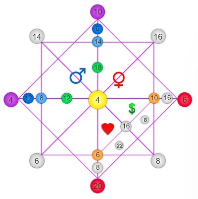

Hobby-uri
Pot spune că lucrurile care mă pasionează sunt variate, ceea ce îmi oferă multe abilităţi, dar, de asemenea, îmi creează dificultăţi în alegerea profesiei. Totuşi, ocupaţiile faţă de care manifest interes se pot clasifica astfel:
psihologie♥
prepararea deserturilor
predarea unor lecţii
